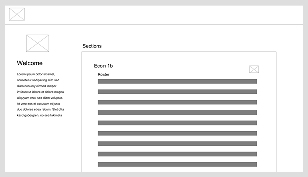
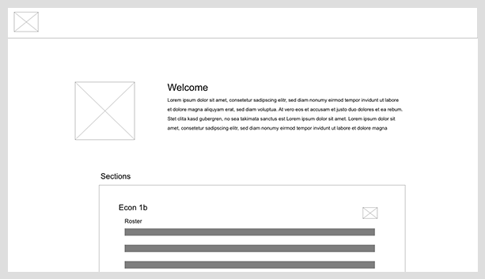
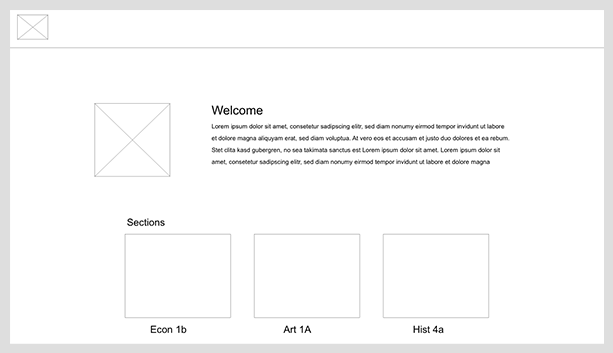
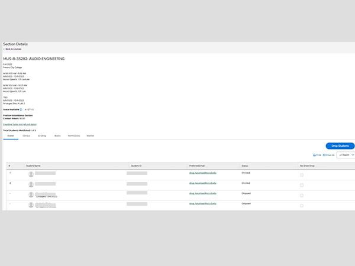
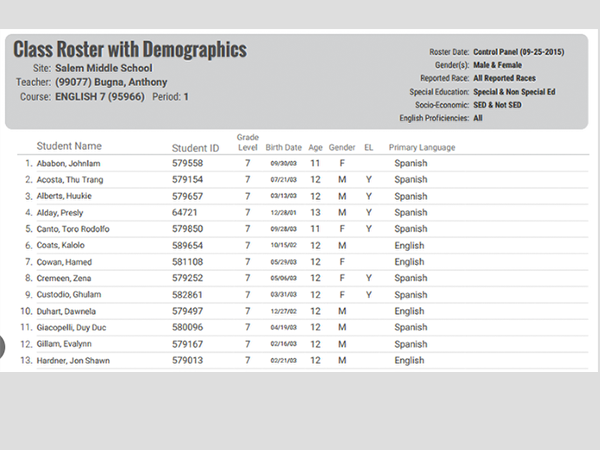
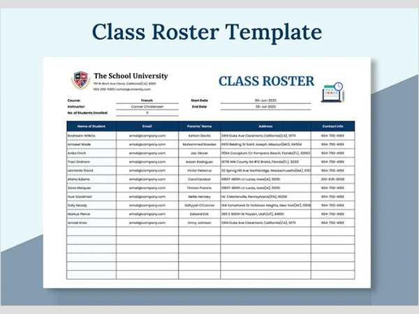

CASE STUDY
Faculty Roster

Project Overview
Between November 2023 and December 2023, I led a project to create a Faculty Roster retrieval page in response to unusual performance spikes on our main platform. The goal was to provide Faculty with a way to access their instructional section rosters without disruption, even during high traffic periods.
My role in this project was multifaceted, as I took on the responsibilities of Lead UX Designer, UX Researcher, UX Tester, DBA, and Developer. The result was a single-page web application that was not only user-friendly and accessible but also integrated with the backend to retrieve roster data efficiently.
| Tech Stack | .NET Core, SQL Server, JavaScript, Bootstrap |
|---|---|
| Project Type | Full-stack web app |
| Role | Lead UX Designer, UX Researcher, UX Tester, DBA, Developer |
| Completion Date | Dec 2023 |

Key Features
- Ease of Use: The page needed to be intuitive and straightforward.
- Accessibility: It was essential for the page to be fully accessible, following WCAG standards.
- Printability: Faculty needed the option to print their rosters easily.
- Comprehensive Display: The page needed to show enrolled, dropped, and waitlisted students clearly and concisely.

Project Gallery





Design and Development Insights
As UX designer, researcher, DBA, and developer, I owned this project from research through backend optimization.
User Research
To ensure the new Faculty Roster page met user needs, I conducted extensive user research by examining the existing roster displays in our Student software. This helped me understand what Faculty were accustomed to seeing. Additionally, I researched best practices and alternative roster layouts online to guide my design process.
The following core requirements were identified during the research phase:
- Ease of Use: The page needed to be intuitive and straightforward
- Accessibility: It was essential for the page to be fully accessible, following WCAG standards
- Printability: Faculty needed the option to print their rosters easily
- Comprehensive Display: The page needed to show enrolled, dropped, and waitlisted students clearly and concisely
These requirements guided the design and development of the prototypes and final product.



Left to right: education software inspiration, sample roster 1, sample roster 2
Design and Development Process
With a clear understanding of user needs, I began designing several prototype layouts for the Faculty Roster page. Each mockup was aimed at providing a clean, accessible, and easily navigable interface that could be quickly understood by Faculty members.
The development process involved not only front-end work but also back-end optimization. I created a new stored procedure to handle the retrieval of roster data from multiple tables and optimized an existing stored procedure's performance from 4 seconds to under 1 second. Collaborating closely with the DBAs, I ensured that the backend was robust and scalable, even during peak usage times.
Prototypes
Three distinct mockups were developed to test different layout possibilities. These mockups demonstrated varying ways to organize and display the enrolled, dropped, and waitlisted students while maintaining clarity and ease of use.
The final prototype was selected based on feedback from stakeholders and testing, and the page was designed to meet all user requirements, including print functionality.
Key Performance Indicators
- 75% reduction in Roster Retrieval Time: The optimized stored procedure reduced roster retrieval time by 75%, cutting it down from 4 seconds to less than 1 second.
- 40% improvement in Faculty Satisfaction: Post-launch surveys indicated a 40% improvement in Faculty satisfaction with the roster retrieval process, due to the ease of use and printability features.
- 50% decrease in Support Tickets: The implementation of the Faculty Roster page led to a 50% reduction in support tickets related to roster retrieval issues, significantly alleviating the workload on the IT support team.
Launch
The Faculty Roster page was successfully launched with test data and is now available to all Faculty. It ensures that Faculty can retrieve their instructional rosters without any interruption, even during times of high system load.

Lessons Learned & Future Improvements
Impact
This project had a significant impact on the Faculty's ability to access critical information during high traffic periods, ensuring their work continued uninterrupted. The backend optimization and creation of a new stored procedure not only improved performance but also strengthened the overall system's resilience.
The Faculty Roster page had a significant and immediate impact on the daily operations of the Faculty and IT teams. By improving the speed and reliability of roster retrieval, Faculty members could continue their work without interruption during peak periods. This project not only enhanced user satisfaction but also reduced the overall load on the system, which helped to stabilize performance during critical times.
The project demonstrated the importance of building robust, user-centered tools that prioritize both efficiency and accessibility. By addressing the root causes of the performance issues and optimizing the system’s backend, I was able to deliver a solution that had a lasting positive effect on our institution.
What I Learned
I discovered that I enjoy projects involving both frontend and backend development. Optimizing database procedures and improving system performance were particularly rewarding aspects of this project. Additionally, collaborating with DBAs allowed me to further hone my backend skills and learn new optimization techniques.
EXPLORE MORE
Continue through the portfolio.
Browse the complete project collection, or reach out if you would like to discuss the engineering and design decisions behind this work.